Minor Arcana · Suit of Cups
Suit of Cups Tarot Card Meanings
The Suit of Cups is water - emotions, love, relationships, and connection. Want to know what your Cups cards mean for your situation? Every reader on our line is hand-vetted - connect in under 60 seconds, $1 for your first minute, hang up anytime.
- Hand-vetted readers
- Available 24/7
- Hang up anytime

What the Suit of Cups Represents
Cups carry the element of water: emotions, love, intuition, feelings, and connection. This is the suit of the heart - relationships, attachment, compassion, and your inner emotional world. When Cups appear, the reading is about how you feel and how you relate: a relationship, a friendship, healing, joy, grief, or the emotional truth beneath a situation.
When the Suit of Cups Dominates a Reading
A spread heavy with Cups tells you the matter is emotional at its core - love, connection, and feelings are central, not logic or money. It can show deep fulfillment and bonding, or it can flag where emotions are blocked, idealized, or overwhelming. Cups ask you to look honestly at the heart of it.
Suit of Cups - All 14 Card Meanings
Tap any card for its full meaning - upright, reversed, love, career, timing, combinations, and advice with examples:
Ace of Cups
A new emotional beginning - love, compassion, an open heart overflowing.
Meaning →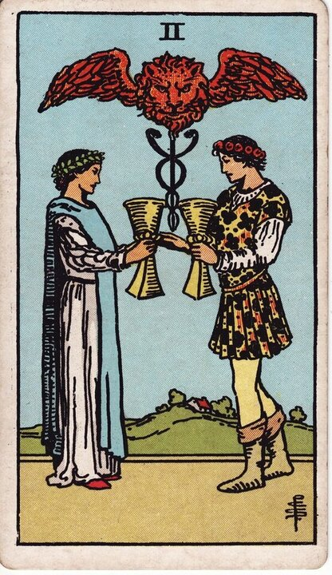
Two of Cups
Mutual attraction, partnership, and a balanced one-to-one connection.
Meaning →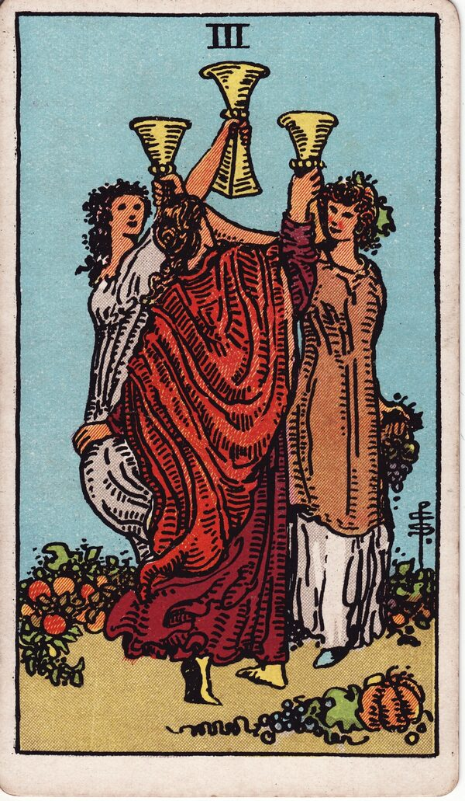
Three of Cups
Friendship, celebration, community, and shared joy.
Meaning →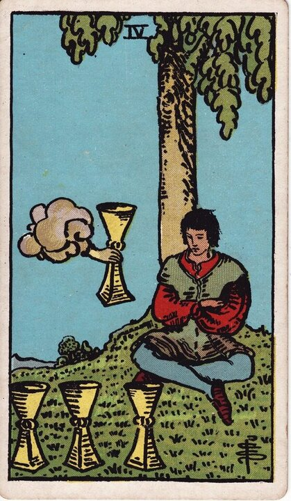
Four of Cups
Apathy, contemplation, or missing an offer because you're focused inward.
Meaning →
Five of Cups
Grief and regret - focused on loss while something still remains.
Meaning →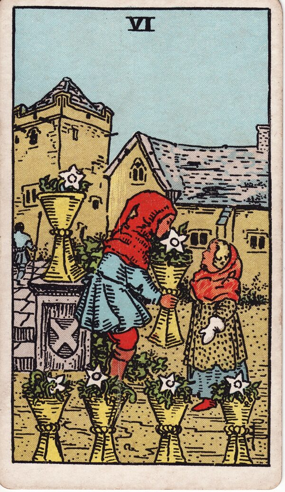
Six of Cups
Nostalgia, innocence, reunion, and gifts from the past.
Meaning →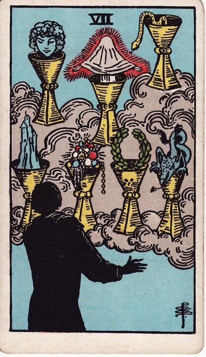
Seven of Cups
Many options, fantasy, and the need to choose clearly amid illusion.
Meaning →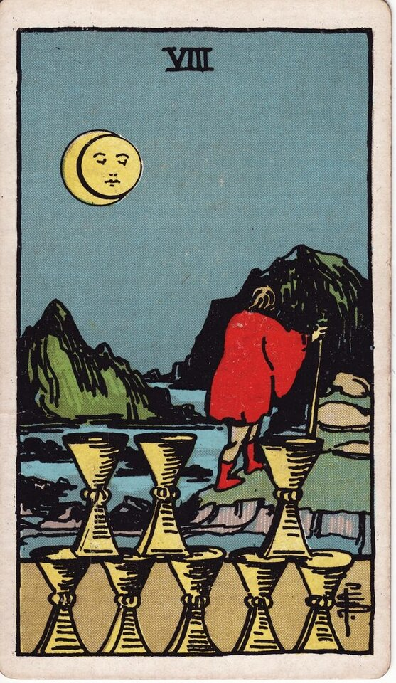
Eight of Cups
Walking away from what no longer fulfills you to seek something deeper.
Meaning →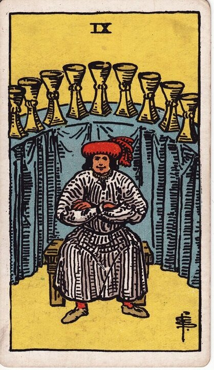
Nine of Cups
Contentment, emotional satisfaction - the "wish" card.
Meaning →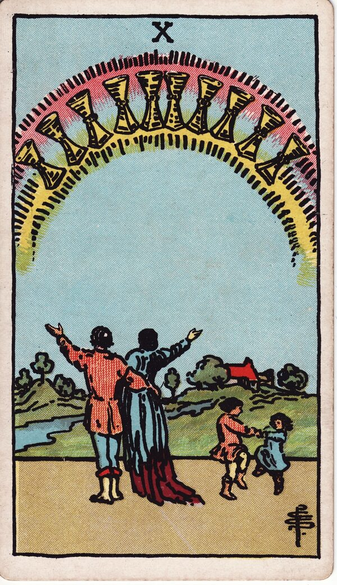
Ten of Cups
Lasting happiness, harmony, and emotional fulfillment in family or love.
Meaning →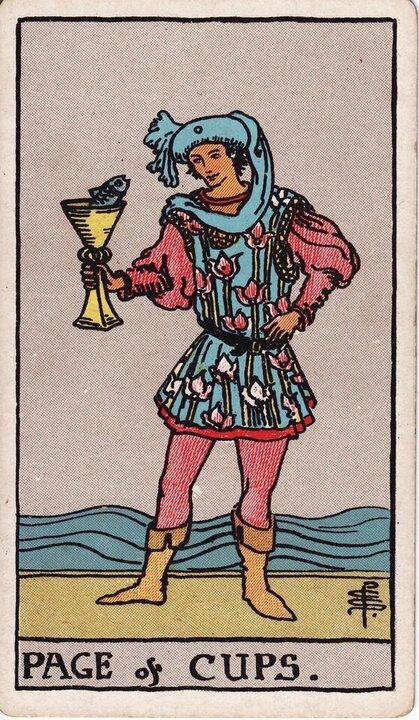
Page of Cups
A tender message, creative or romantic, and emotional curiosity.
Meaning →
Knight of Cups
The romantic - following the heart, an offer, a charming pursuit.
Meaning →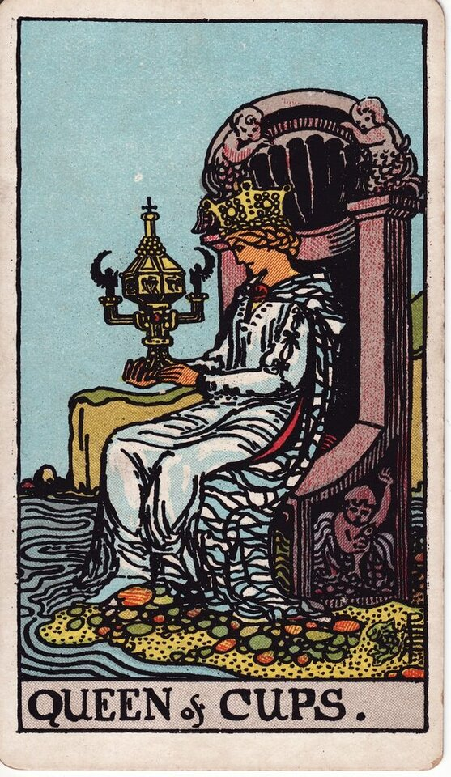
Queen of Cups
Compassionate, intuitive, emotionally wise nurturing.
Meaning →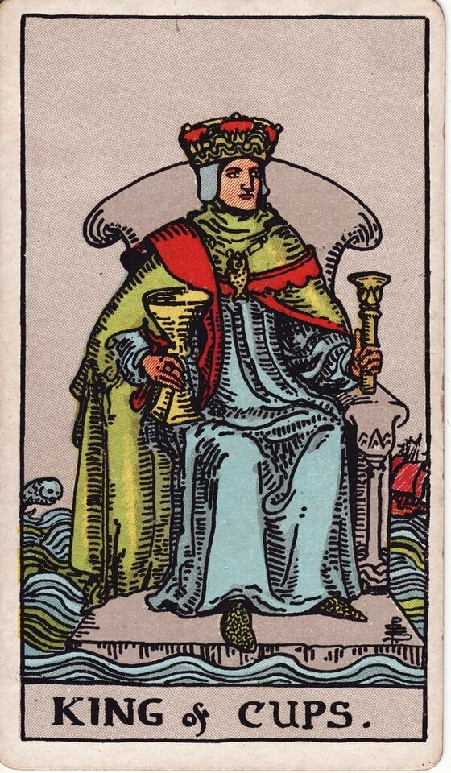
King of Cups
Emotional mastery - calm, balanced, supportive even under pressure.
Meaning →
Cups Reversed - In Brief
Reversed Cups generally show emotions blocked, repressed, idealized, or overwhelming: disappointment, withdrawal, moodiness, codependency, or feelings that need to be faced or released. The exact card, position, and surrounding cards tell a reader which.
Cups in a Tarot Reading
Card meanings are the map; a live reader applies them to your actual question - which Cups, in which positions, beside which suits. See all four suits on the Minor Arcana meanings hub, the big themes on the Major Arcana meanings page, or take it into a love tarot reading or full phone tarot reading.
What Do Your Cups Cards Mean for You?
A meanings list is the map; a live reading is the territory. We'll connect you with the right hand-vetted tarot reader in under 60 seconds. $1/min first call · 15 minutes for $10 · hang up anytime · 100% satisfaction promise.
Call (888) 920-6662 NowSuit of Cups - Frequently Asked Questions
What does the Suit of Cups represent?
Water - emotions, love, relationships, intuition, and connection.
What if my reading is mostly Cups?
The matter is emotional at its core - love, feelings, and connection, or where emotions are blocked.
What do Cups mean reversed?
Emotions blocked, repressed, idealized, or overwhelming - disappointment or feelings to release.
Which element is Cups?
Water - the realm of the heart, feeling, and intuition.
Get Your Tarot Reading Now
Connected to a hand-vetted reader in under 60 seconds, the cards pulled on your real question, and you hang up with clarity.
Call (888) 920-6662